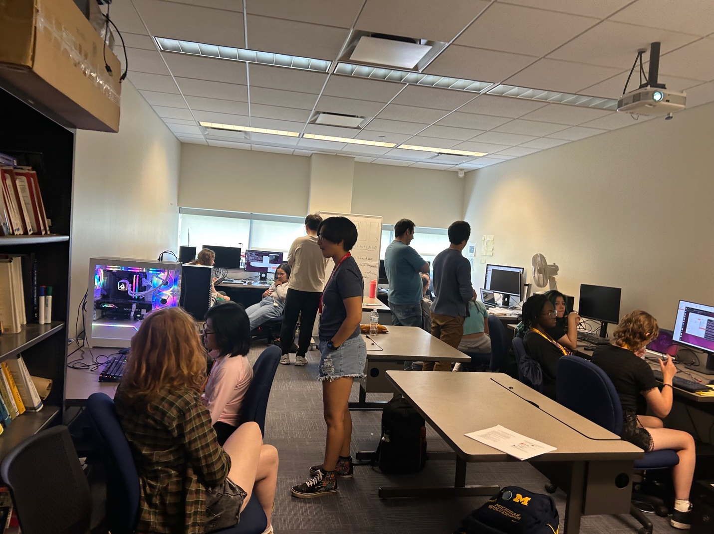

2025 MTU WICS Summer Youth Program
Cybersecurity Track
Organizer: Prof. Bo Chen
June 25, 2025
Location: Rekhi 318 (MTU Security and Privacy lab)
1:00PM - 2:00PM: An Introduction of Cybersecurity and Flash Memory Security Research (by Josh Dafoe)
2:00PM - 2:45PM: Hands-on Task 1 – Building A Flash Storage Device by Porting Open-source flash firmware to An Electronic Board (by Josh Dafoe, Amirmehdi Moghadamfarid , Qiang Han, Zhuoyan Xu) video-guide
2:45PM - 3:30PM: Hands-on Task 2 – Integrating Disk Encryption into The Flash Translation Layer (by Josh Dafoe, Amirmehdi Moghadamfarid , Qiang Han, Zhuoyan Xu)
